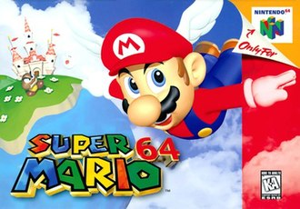

North American Cover Art
General Information
- Developer(s): Nintendo EAD
- Publisher(s): Nintendo
- Series: Super Mario
- Genre(s): Platform, Action-adventure
- Mode(s): Single-player
Key Staff
- Director: Shigeru Miyamoto
- Producer: Shigeru Miyamoto
- Designer(s): Yoichi Yamada, Yasuhisa Yamamura, Kenta Usui, Naoki Mori, Yoshiki Haruhana, Makoto Miyanaga, Katsuhiko Kanno
- Programmer(s): Yasunari Nishida, Yoshinori Tanimoto, Hajime Yajima, Daiki Iwamoto, Toshio Iwawaki, Takumi Kawagoe, Giles Goddard
- Artist(s): Shigefumi Hino, Hisashi Nogami, Yoshiaki Koizumi, Hideki Fujii, Satoru Takizawa, Masanao Arimoto, Tomoaki Kuroume, Yusuke Nakano, Yōichi Kotabe
- Writer: Leslie Swan
- Composer: Koji Kondo
Platform(s)
- Nintendo 64
- iQue Player
Release Dates
- Nintendo 64:
- Japan: June 23, 1996
- North America: September 29, 1996
- PAL Regions: March 1, 1997
- iQue Player:
- China: November 18, 2003
Super Mario 64 is a 1996 platform game developed and published by Nintendo for the Nintendo 64. It was released in Japan and North America in 1996 and PAL regions in 1997. It is the first Super Mario game to feature 3D gameplay, combining traditional Super Mario gameplay, visual style, and characters in a large open world. In the game, Bowser, the primary antagonist of the Super Mario franchise, invades Princess Peach's castle and hides the castle's sources of protection, the Power Stars, in many different worlds inside magical paintings. As Mario, the player collects Power Stars to unlock enough of Princess Peach's castle to get to Bowser and rescue Princess Peach.
Director Shigeru Miyamoto conceived a 3D Super Mario game during the production of Star Fox (1993). Development lasted nearly three years: about one year on design and twenty months on production, starting with designing the virtual camera system. The team continued with illustrating the 3D character models—at the time a relatively unattempted task—and refining sprite movements. The sound effects were recorded by Yoji Inagaki and the score was composed by Koji Kondo.
Super Mario 64 was highly anticipated by video game journalists and audiences, boosted by advertising campaigns and showings at the 1996 E3 trade show. It received critical acclaim, with reviewers praising its ambition, visuals , level design, and gameplay, though some criticized its virtual camera system. It is the best-selling Nintendo 64 game, with nearly twelve million copies sold by 2015.
Retrospectively, Super Mario 64 has been considered one of the greatest video games of all time. Numerous developers have cited it as an influence on 3D platform games, with its dynamic camera system and 360-degree analog control establishing a new archetype for the genre, much as Super Mario Bros. did for side-scrolling platform games. It was remade as Super Mario 64 DS for the Nintendo DS in 2004, and has been ported to other Nintendo consoles since. The game has attracted a cult following, spawning many fangames and mods, a large speedrunning presence, and enduring rumors surrounding game features.